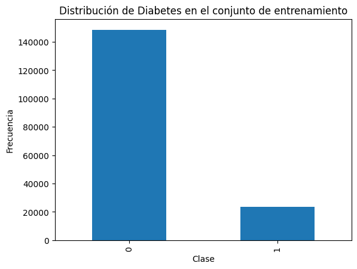

5. Balanceo#
import pandas as pd
import matplotlib.pyplot as plt
import seaborn as sns
import math
from sklearn.neighbors import KNeighborsClassifier, KNeighborsRegressor
from sklearn.metrics import (confusion_matrix, classification_report, accuracy_score,
precision_score, recall_score, f1_score, roc_auc_score, roc_curve,
mean_absolute_error, mean_squared_error, r2_score, root_mean_squared_error)
from sklearn.model_selection import train_test_split
from sklearn.compose import ColumnTransformer
from imblearn.pipeline import Pipeline
from sklearn.preprocessing import OneHotEncoder, StandardScaler
from sklearn.linear_model import LogisticRegression
from sklearn.metrics import (
classification_report, confusion_matrix, roc_curve, roc_auc_score,
precision_recall_curve, average_precision_score, precision_score, recall_score
)
from sklearn.base import BaseEstimator, TransformerMixin
from sklearn.preprocessing import StandardScaler
import numpy as np
X = pd.read_csv("df_sin_atipicos.csv")
y = pd.read_csv("y_sin_atipicos.csv")['diabetes']
X_train = pd.read_csv("X_train.csv")
X_test = pd.read_csv("X_test.csv")
y_train = pd.read_csv("y_train.csv")['diabetes']
y_test = pd.read_csv("y_test.csv")['diabetes']
num_cols = X_train.select_dtypes(include="number").columns
cat_cols = X_train.select_dtypes(include="object").columns
Diabetes (Desbalanceada)#
X_train.isnull().sum()
salud_general 0
dias_salud_fisica 0
dias_salud_mental 0
ultimo_chequeo 0
actividades_fisicas 0
horas_sueño 0
dientes_removidos 0
ataque_cardiaco 0
angina 0
ACV 0
asma 0
EPOC 0
trastorno_depre 0
enfermedad_riñon 0
artritis 0
estado_fumador 0
uso_cigarroelect 0
categoria_etnica 0
categoria_edad 0
altura_metros 0
peso_kilos 0
bmi 0
bebedor_alcohol 0
alto_riesgo_ap 0
dtype: int64
y_train.value_counts().plot(kind='bar')
plt.title("Distribución de Diabetes en el conjunto de entrenamiento")
plt.xlabel("Clase")
plt.ylabel("Frecuencia")
plt.show()

categorical_idx = [X.columns.get_loc(col) for col in cat_cols]
categorical_idx
[0, 3, 4, 6, 7, 8, 9, 10, 11, 12, 13, 14, 15, 16, 17, 18, 22, 23]
Balance de variable objetivo con SMOTENC#
from imblearn.over_sampling import SMOTENC
df_smote = SMOTENC(categorical_features=categorical_idx, random_state=42)
X_train_resampled, y_train_resampled = df_smote.fit_resample(X_train, y_train)
X_train_resampled.shape, y_train_resampled.shape
((297082, 24), (297082,))
print("Distribución balanceada:\n", y_train_resampled.value_counts())
Distribución balanceada:
diabetes
1 148541
0 148541
Name: count, dtype: int64
X_train_resampled.head(5)
| salud_general | dias_salud_fisica | dias_salud_mental | ultimo_chequeo | actividades_fisicas | horas_sueño | dientes_removidos | ataque_cardiaco | angina | ACV | ... | artritis | estado_fumador | uso_cigarroelect | categoria_etnica | categoria_edad | altura_metros | peso_kilos | bmi | bebedor_alcohol | alto_riesgo_ap | |
|---|---|---|---|---|---|---|---|---|---|---|---|---|---|---|---|---|---|---|---|---|---|
| 0 | Good | 0.0 | 0.0 | Within past year (anytime less than 12 months ... | No | 10.0 | None of them | No | Yes | No | ... | Yes | Former smoker | Never | White | Age 75 to 79 | 1.75 | 103.42 | 33.67 | Yes | No |
| 1 | Excellent | 0.0 | 0.0 | Within past year (anytime less than 12 months ... | Yes | 8.0 | None of them | No | No | No | ... | No | Former smoker | Never | White | Age 75 to 79 | 1.70 | 72.57 | 25.06 | Yes | No |
| 2 | Excellent | 7.5 | 0.0 | Within past year (anytime less than 12 months ... | Yes | 9.0 | 6 or more, but not all | Yes | No | No | ... | Yes | Current smoker | Stop | White | Age 50 to 54 | 1.91 | 72.57 | 20.00 | Yes | No |
| 3 | Excellent | 0.0 | 0.0 | Within past year (anytime less than 12 months ... | Yes | 7.0 | 1 to 5 | No | No | No | ... | No | Never smoked | Stop | White | Age 60 to 64 | 1.88 | 83.91 | 23.75 | Yes | No |
| 4 | Good | 1.0 | 4.0 | Within past year (anytime less than 12 months ... | Yes | 6.0 | None of them | No | No | No | ... | No | Never smoked | Never | White | Age 50 to 54 | 1.78 | 62.60 | 19.80 | Yes | No |
5 rows × 24 columns
X_train_resampled.to_csv("X_train_resampled.csv", index=False)
y_train_resampled.to_frame().to_csv("y_train_resampled.csv", index=False)